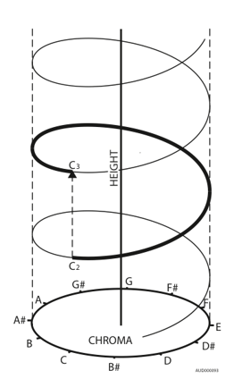

What is it?
This illusion is best heard in groups! (But don’t worry if you are on your own).
You will hear two consecutive tones and you must decide whether you think they are ascending or descending in pitch. You might find that other people disagree with you…
What is going on?
This illusion is based on the same concepts that underlie the Shepard tones, which you may have already listened to.
The fundamental idea is that pitch is not just a linear scale of frequency, as often assumed, but actually possesses two dimensions: pitch height (which octave the tone belongs) and pitch chroma (where it lies in the octave).
This is perhaps best demonstrated by the pitch helix shown below.
Octave: Notes A through to G#, though can start and finish at any note. An A on a higher octave has double the frequency of the A below. (eg 440Hz in first octave and 880Hz in the next)1

Roger Shepard created complex tones that consist of multiple harmonics and are attenuated to fit a bell shaped curve.
The result were tones that became ambiguous in relation to pitch height so people can only judge the tone based on a pitch circle.
This means the helix had collapsed into a circle!
People generally hear an ascending pattern if the shortest vector between two tones travels clockwise and a descending pattern if it is anticlockwise.
In this illusion, the two tones are equidistant apart, for example C and F#. This is a tritone. Now it is unclear whether they are going up or down in pitch, does the vector go clockwise or anticlockwise?

What is in the research?
Diana Deutsch proposed the idea that people orientate their pitch class circle differently.
For example one person may have the note C in the 12 o’clock position but another may have F in the 12 o’clock position.
Subsequently, this appears to affect how they perceive a pitch change between a tritone, for example one would hear C - F# as ascending but the other person would hear it descending2.
Deutch conducted further research and found evidence that the orientation of pitch class and tritone perception was related to linguistic exposure and particularly, what language people had been exposed to at an early age.
She took two groups of Vietnamese speakers, one group that had come to the US from Vietnam as an adult and one that had grown up in the US but had been exposed to Vietnamese, and compared them to a group of native English speakers in California.
She found that the two groups of Vietnamese speakers perceived the tritone similarly, despite growing up differently. They also significantly differed from the native Californian English group3.
Research by Stephanie Malek seeked to theorise a different model that could explain pitch circularity and the tritone paradox. She used the psychoacoustic idea of virtual pitch.
This idea says that when we hear a complex tone that is composed of multiple frequencies, such as a Shepard tone, we extract the greatest common divisor between the multiple frequencies and perceive this ‘virtual pitch’.
For example if the frequencies 100 Hz, 200Hz, and 400Hz were played as complex tone, the greatest common divisor is 100Hz, and we would perceive the pitch at 100Hz. She couples the idea of virtual pitch with a probabilistic threshold model to account for the different perceptions that people have4.
Finally, a study by Shimizu et al investigated the neuronal response to Shepard tones using fMRI.
They were particularly interested in the areas involved in maintaining the illusion of pitch circularity.
They identified areas in the auditory cortex, temporal lobes and surprisingly in the occipital cortex (which is usually connected to vision).
One of the unique aspects of the study was that the team developed a method of measuring activation over a long period of time in fMRI, which had been difficult beforehand5.
References
- Britannica Editors, 2010, https://www.britannica.com/art/octave-music, Encyclopaedia Britannica
- Deutsch, D., 1992, Paradoxes of musical pitch, Scientific American
- Deutsch, D., Henthorn T. and Dolson, M., 2004, Speech patterns heard early in life influence later perception of the tritone paradox. Music Perception
- Stephanie Malek, 2018, Pitch Class and Envelope Effects in the Tritone Paradox Are Mediated by Differently Pronounced Frequency Preference Regions, Frontiers in Psychology
- Shimizu et al, 2007, Neuronal response to Shepard's tones. An auditory fMRI study using multifractal analysis, Brain Research